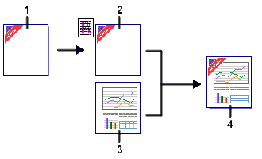

A document created in an application will be superimposed with the Overlay Data created separately, and then printed. This function is called Overlay.
For printing with the Overlay function, an Overlay Data file and Overlay Setting must be created in advance.

1. Overlay Data:
This is the image data for superimposing, which is saved in the Overlay format.
2. Overlay Setting:
An Overlay Data file is combined with the setting details (such as how and which page Overlay Data is superimposed on), named, and registered as a set. Each set registered is called an Overlay Setting.
When printing with Overlay, select an Overlay Setting with the setting details, and the method and page that you prefer the image to be superimposed on.
3. A document to be printed:
Using an application, create a document to be printed with the Overlay Setting.
4. Print result:
The document is printed with the Overlay Setting.
Superimposing data will be aligned with the document page at the upper left corner. If the document to be printed and superimposing data differ in size and orientation, the superimposing data might be cut or protrude.
Depending on the application, you might not get the expected result.
Open the printing preferences dialog box after creating a document in an application.
Click the Frequently Used Settings tab or the Job Setup menu of the Detailed Settings tab.
Select Save as Overlay Data in the Job Type: list.
Click Details...
to open a dialog box and select the destination to save the overlay data.
Enter the file name for the "rpo" overlay data file.
Click Save to save the new overlay data and close the dialog box.
Open the printing preferences dialog box after creating a document in an application.
Click the Effects menu on the Detailed Settings tab.
Select the Add Overlay check box. Click Edit... to open a dialog box.
Enter the name of the Overlay Setting in the Name: box.
To edit a registered Overlay Setting, select the name of the overlay
setting in the Overlay Data: list.
In the Path/File Name: box, enter the path and file name for the Overlay Data file or click Browse... to select the file you want to use as the Overlay Data .
To print the Overlay Data in the front, select the Bring to Front check box. The image under the Overlay Data will not be visible.
To superimpose the Overlay Data on the first page only, select the First Page Only check box.
After specifying the settings, click
Add or Update to save the setting.
If you click Update, a dialog box appears
asking if you want to overwrite the old overlay setting. Click Yes.
Click OK to close the dialog box.
After making any other necessary settings, click OK to close the printing preferences dialog box.
Start printing.
You can select a registered Overlay Setting in the Overlay Data: list on the Effects menu.
To print the same overlay data using different setting configurations, provide each of the available data combinations with its own overlay data name and register those names in advance.
Open the printing preferences dialog box.
Click the Effects menu on the Detailed Settings tab.
Select the Add Overlay check box. Click Edit... to open a dialog box.
Select an Overlay Setting from the Overlay Data: list, and then click Delete.
A dialog box appears prompting for confirmation. Click Yes.
Click OK to close the dialog box.